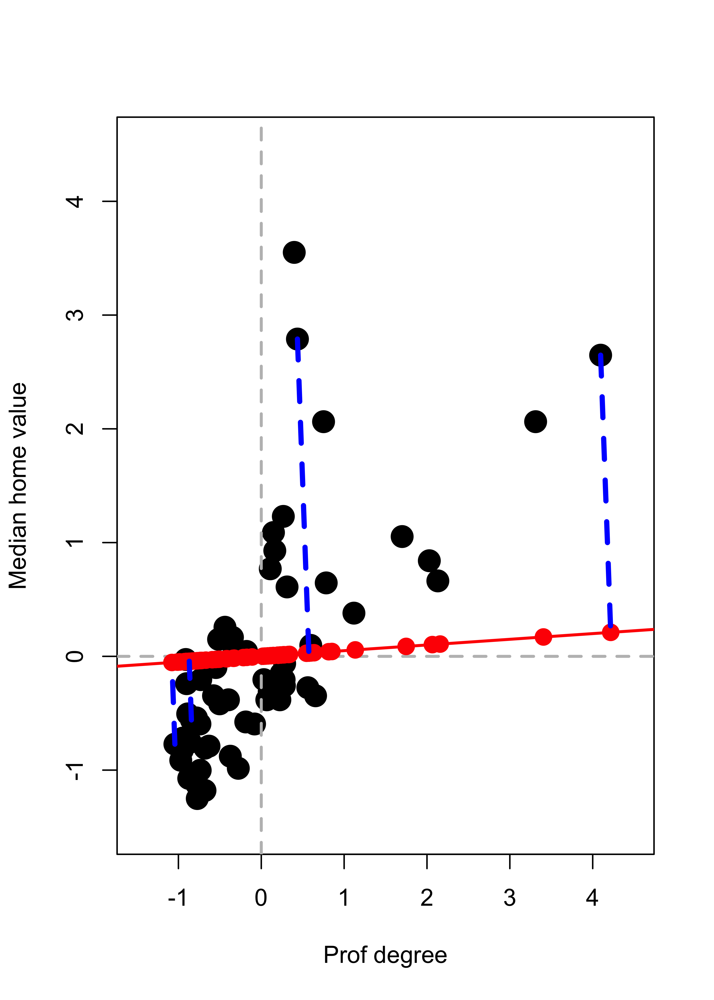
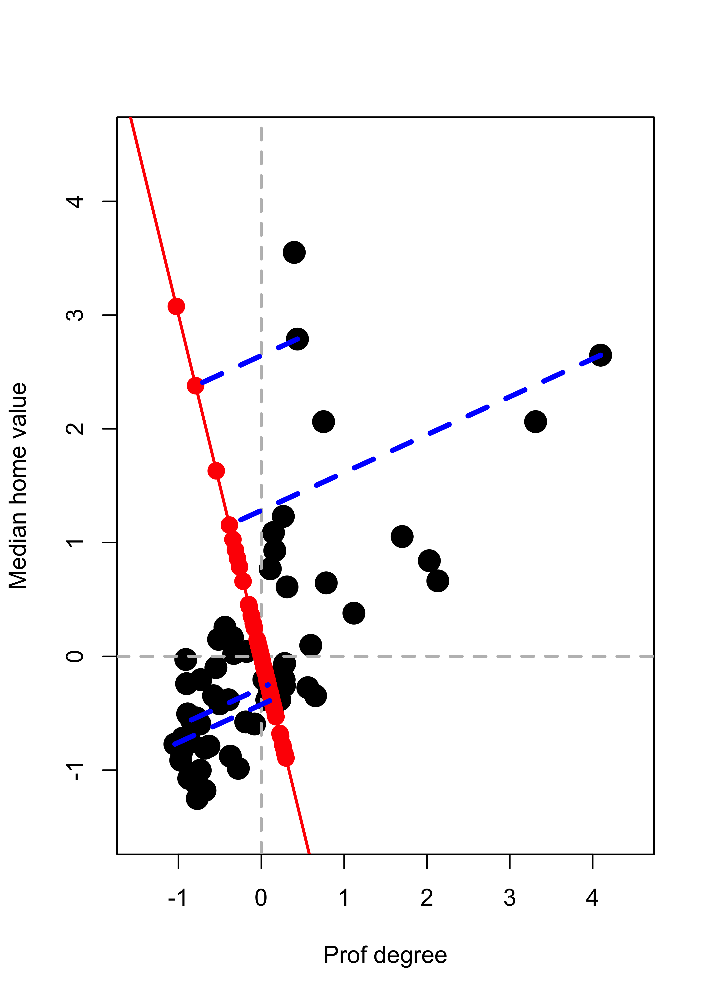
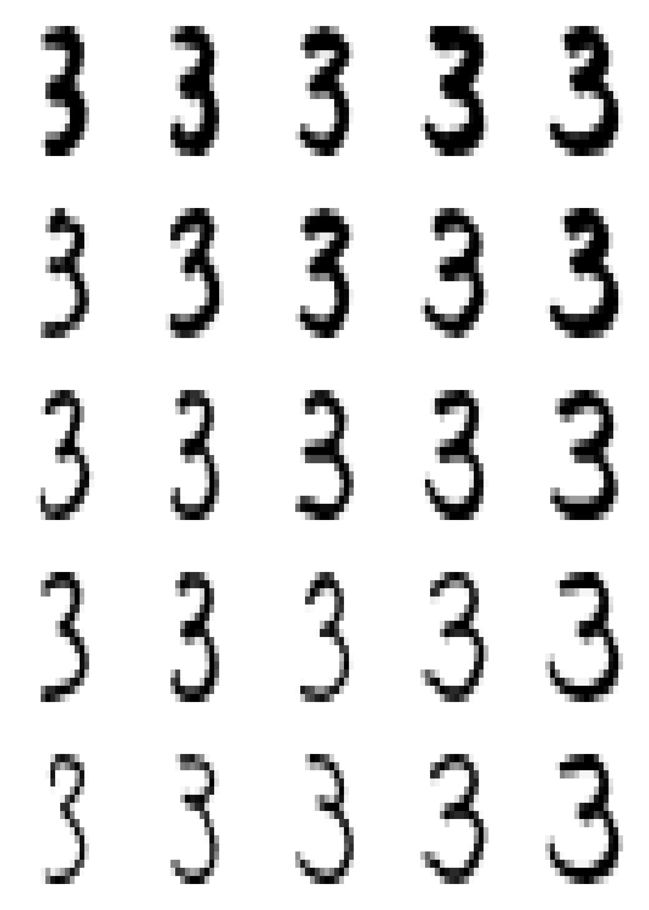

x <- read.table("data/t8-5.dat", header = FALSE)20 Introduction
Unsupervised learning methods differ from the supervised ones we have studied so far in that there is no response variable. The objective is not related to prediction but rather to the identification of different possible structures that may be present in the data. For example, one may be interested in determining whether the observations are “grouped” in some way (clustering), or if the data can be efficiently represented using fewer variables or features (dimension reduction).
Many of these methods do not rely on any probabilistic model, and thus there may not be a clear target to be estimated or approximated. As a consequence, the conclusions that can be reached from this type of analyses are often of an exploratory nature.
20.1 Principal Components Analysis
Although principal components can be easily computed with the spectral decomposition of the covariance matrix of the data (using the function svd in R, for example), there are a few dedicated implementations in R, among them prcomp and princomp). The main difference between these two is which internal function is used to compute eigenvalues and eigenvectors: prcomp uses svd and princomp uses the less preferred function eigen. Both princomp and prcomp return the matrix of loadings (eigenvectors), the scores (projections of the data on the basis of eigenvectors), and other auxiliary objects. They also include plot and summary methods.
Instead of reviewing those (which can be easily done individually), in these notes I will reproduce two of the examples used in class (the simple 2-dimensional one used to motivate the topic, and the more interesting 256-dimensional one using the digits data).
Finally, I will also show that principal components can be computed using an iterative algorithm (alternate regression), which may be faster than factorizing the covariance matrix, particularly when one is only interested in a few principal components and the dimension of the data is large (but also look at the arguments nu and nv for the function svd in R).
20.2 Simple 2-dimensional example
We first read the data for the simple illustration of PC’s as best lower dimensional approximations.
Note that the data has 5 explanatory variables. Here we only use two of them in order to be able to visualize the analysis more easily:
xx <- x[, c(2, 5)]
colnames(xx) <- c("Prof degree", "Median home value")As discussed in class, we standardize the data to avoid a large difference in scales “hijacking” the principal components:
xx <- scale(xx, center = colMeans(xx), scale = TRUE)We now define two auxiliary functions to compute Euclidean norms and squared Euclidean norms (less general by probably faster than R’s base::norm):
norm2 <- function(a) sum(a^2)
norm <- function(a) sqrt(norm2(a))We start by looking at the data with a scatter plot:
plot(xx, pch = 19, col = "black", cex = 2, xlim = c(-1.5, 4.5), ylim = c(-1.5, 4.5))
abline(h = 0, lwd = 2, col = "grey", lty = 2)
abline(v = 0, lwd = 2, col = "grey", lty = 2)
We now compute projections along the direction of the vector \(\mathbf{v} \propto (1, 0.05)^\top\). Recall from your linear algebra courses that the orthogonal projection of a point \(\mathbf{x}\) on the linear subspace spanned by \(\mathbf{v}\) (where \(\| \mathbf{v} \| = 1\)) is given by \(\pi_{\mathbf{v}} ( \mathbf{x} ) = \langle \mathbf{x}, \mathbf{v} \rangle \, \mathbf{v}\) which can also be written as \(\pi_{\mathbf{v}} ( \mathbf{x} ) = ( \mathbf{v} \, \mathbf{v}^\top) \mathbf{x}\). We first find the coordinates of the orthogonal projects of each observation along the subspace generated by \(\mathbf{v} = (1, 0.05)^\top\) (these are the scalars \(\langle \mathbf{x}_i, \mathbf{v} \rangle = \mathbf{x}_i^\top \mathbf{v}\) for each point \(\mathbf{x}_i\):
a <- c(1, 0.05)
a <- a / norm(a)
# Find the projections (coordinates of the
# observations on this basis of size 1)
prs <- (xx %*% a)We now compute the projections \(\pi_{\mathbf{v}} ( \mathbf{x}_i ) = \langle \mathbf{x}_i, \mathbf{v} \rangle \, \mathbf{v}\):
pr <- prs %*% aand add them to the plot, with a few observations highlighted. The subspace is shown in red, and the orthogonal projections as solid red dots on that line:
# Plot the data
plot(xx, pch = 19, col = "black", cex = 2, xlim = c(-1.5, 4.5), ylim = c(-1.5, 4.5))
abline(h = 0, lwd = 2, col = "grey", lty = 2)
abline(v = 0, lwd = 2, col = "grey", lty = 2)
# Show the subspace on which we are projecting
abline(0, a[2] / a[1], lwd = 2, col = "red")
# Add the projections of the data on this subspace
points(pr[, 1], pr[, 2], pch = 19, cex = 1.5, col = "red")
# Highlight a few of them
ind <- c(26, 25, 48, 36)
pr2 <- pr[ind, ]
for (j in 1:length(ind)) {
lines(c(xx[ind[j], 1], pr2[j, 1]), c(xx[ind[j], 2], pr2[j, 2]),
col = "blue", lwd = 3.5, lty = 2
)
}
We repeat the above but projecting on a different direction \(\mathbf{v} \propto (-1, 3)^\top\):
a <- c(-1, 3)
a <- a / norm(a)
# Find the projections (coordinates of the
# observations on this basis of size 1)
prs <- (xx %*% a)
# Find the orthogonal projections of each
# observation on this subspace of dimension 1
pr <- prs %*% a
# Plot the data
plot(xx, pch = 19, col = "black", cex = 2, xlim = c(-1.5, 4.5), ylim = c(-1.5, 4.5))
abline(h = 0, lwd = 2, col = "grey", lty = 2)
abline(v = 0, lwd = 2, col = "grey", lty = 2)
# Show the subspace on which we are projecting
abline(0, a[2] / a[1], lwd = 2, col = "red")
# Add the projections of the data on this subspace
points(pr[, 1], pr[, 2], pch = 19, cex = 1.5, col = "red")
# Highlight a few of them
ind <- c(26, 25, 48, 36)
pr2 <- pr[ind, ]
for (j in 1:length(ind)) {
lines(c(xx[ind[j], 1], pr2[j, 1]), c(xx[ind[j], 2], pr2[j, 2]),
col = "blue", lwd = 3.5, lty = 2
)
}
We saw in class that the direction \(\mathbf{v}\) that results in orthogonal projections closest to the original data (in the sense of minimizing the mean (or sum) of the residuals Euclidean norm squared) is given by the “first” eigenvector of the covariance matrix of the data. This is the first principal component. Refer to the class slides and discussion for more details and the definition and properties of the other principal components.
20.3 Digits example
In this example we use principal components to explore the zip code data. In particular, we focus on images from a single digit (we use 3, but the reader is strongly encouraged to re-do this analysis for other digits to explore whether similar conclusions hold for them). We load the training data from the ElemStatLearn package in R, and extract the images that correspond to the digit 3. For more information use help(zip.train, package='ElemStatLearn').
data(zip.train, package = "ElemStatLearn")
a <- zip.train[zip.train[, 1] == 3, -1]Define an auxiliary function to compute the squared Euclidean distance between two vectors (recall that we have already defined the function norm2 above):
dist <- function(a, b) norm2(a - b)To display the images we adapt the following function for plotting a matrix, which was originally available at http://www.phaget4.org/R/image_matrix.html:
myImagePlot <- function(x) {
min <- min(x)
max <- max(x)
ColorRamp <- grey(seq(1, 0, length = 256))
ColorLevels <- seq(min, max, length = length(ColorRamp))
# Reverse Y axis
reverse <- nrow(x):1
x <- x[reverse, ]
image(1:ncol(x), 1:nrow(x), t(x),
col = ColorRamp, xlab = "",
ylab = "", axes = FALSE, zlim = c(min, max)
)
}Using this function, we plot 9 randomly chosen images from our data set:
set.seed(31)
sa <- sample(nrow(a), 9)
par(mai = c(1, 1, 1, 1) / 5, xaxs = "i", yaxs = "i")
par(mfrow = c(3, 3))
for (j in 1:9) myImagePlot(t(matrix(unlist(a[sa[j], ]), 16, 16)))
Next, we centre the observations in order to compute the eigenvectors and eigenvalues of the covariance matrix more efficiently. In fact, note that we do not need to even compute the covariance matrix and can use the SVD of the centred data.
ac <- scale(a, center = TRUE, scale = FALSE)
si.svd <- svd(ac)Using the relationship between the eigenvectors of the covariance matrix and the SVD of the \(n \times p\) data matrix, we compute the coordinates of the centered data on their orthogonal projections along each of the first and 2nd and 3rd principal directions (eigenvectors of the covariance matrix). Recall that the data are stored as rows of the matrix a:
v1 <- as.vector(ac %*% si.svd$v[, 1])
v2 <- as.vector(ac %*% si.svd$v[, 2])As discussed in class, we identify 5 quantiles of each of these coordinates to use as our 2-dimensional grid:
qv1 <- quantile(v1, c(.05, .25, .5, .75, .95))
qv2 <- quantile(v2, c(.05, .25, .5, .75, .95))We can visualize the grid of these 5 x 5 = 25 points over the scatter plot of all the 2-dimensional projections of the data (their coordinates on the principal components basis):
qv <- expand.grid(qv1, qv2)
plot(v1, v2, pch = 19, cex = 1, col = "grey")
points(qv[, 1], qv[, 2], pch = 19, cex = 1.5, col = "red")
We now find the points in our data set (images) with projections closest to each of the 5 x 5 = 25 points in the grid (note that these distances between points in the principal-subspace, which is in the 256 dimensional space) can be computed in terms of their coordinates on the principal-basis only (which are 2-dimensional points):
vs <- cbind(v1, v2)
cvs <- array(0, dim = dim(qv))
for (j in 1:dim(qv)[1]) cvs[j, ] <- vs[which.min(apply(vs, 1, dist, b = qv[j, ])), ]We now add these points to our plot (we use color blue for them):
plot(v1, v2, pch = 19, cex = 1, col = "grey")
points(qv[, 1], qv[, 2], pch = 19, cex = 1.5, col = "red")
for (j in 1:dim(qv)[1]) points(cvs[j, 1], cvs[j, 2], pch = 19, col = "blue")
Using these “blue” coordinates, we construct the corresponding points in the 256-dimensional space:
app <- t(si.svd$v[, 1:2] %*% t(cvs))and identify the images in our data set that are closest to these points
repre <- matrix(0, dim(qv)[1], dim(app)[2])
for (j in 1:dim(qv)[1]) repre[j, ] <- ac[which.min(apply(ac, 1, dist, b = app[j, ])), ]These are the actual images that are closest to the points in the array app above. Now add the column means and display these 25 images according to the points they represent in the red grid:
repre <- scale(repre, center = -colMeans(a), scale = FALSE)
par(mai = c(1, 1, 1, 1) / 5, xaxs = "i", yaxs = "i")
par(mfrow = c(5, 5))
for (j in 1:dim(repre)[1]) {
myImagePlot(t(matrix(unlist(repre[j, ]), 16, 16)))
}
Note how these images change when we “traverse” the 256-dimensional space along each of these 2 principal directions.
20.4 Alternating regression to compute principal components
For details see Appendix @ref(alt-pca).
A function implementing this method to compute the first principal component is:
alter.pca.k1 <- function(x, max.it = 500, eps = 1e-10) {
n2 <- function(a) sum(a^2)
p <- dim(x)[2]
x <- scale(x, scale = FALSE)
it <- 0
old.a <- c(1, rep(0, p - 1))
err <- 10 * eps
while (((it <- it + 1) < max.it) & (abs(err) > eps)) {
b <- as.vector(x %*% old.a) / n2(old.a)
a <- as.vector(t(x) %*% b) / n2(b)
a <- a / sqrt(n2(a))
err <- sqrt(n2(a - old.a))
old.a <- a
}
conv <- (it < max.it)
return(list(a = a, b = b, conv = conv))
}We use it on the digits data above to compute the first principal component (we also time it):
system.time(tmp <- alter.pca.k1(ac)$a)
#> user system elapsed
#> 0.058 0.007 0.065and compare it with the one given by svd, which we also time. Note that the sign of the eigenvectors is arbitrary, so we adjust these vectors in order to have first elements with the same sign.
system.time(tmp2 <- svd(ac)$v[, 1])
#> user system elapsed
#> 0.183 0.002 0.183
tmp <- tmp * sign(tmp2[1] * tmp[1])
summary(abs(tmp - tmp2))
#> Min. 1st Qu. Median Mean 3rd Qu. Max.
#> 4.200e-16 1.195e-12 4.012e-12 7.272e-12 1.169e-11 3.524e-11Note that both eigenvectors are essentially identical, and that the alternating regression method is typically faster than a full SVD decomposition of the covariance matrix.
This difference in speed is more striking for problems in higer dimensions.
To further illustrate the potential gain in speed for larger dimensions, consider the following synthetic data set with n = 2000 observation and p = 1000, and compare the timing and the results (even when forcing svd to only compute a single component).
First generate the data set
n <- 2000
p <- 1000
x <- matrix(rt(n * p, df = 2), n, p)Compute the first eigenvector using alternating regression, and time it:
system.time(tmp <- alter.pca.k1(x))
#> user system elapsed
#> 0.143 0.013 0.157
a1 <- tmp$aCompute the first eigenvector using svd, and time it:
system.time(e1 <- svd(cov(x))$u[, 1])
#> user system elapsed
#> 5.011 0.038 5.053Asking svd to only compute one component does not seem to make the algorithm faster (the results are identical):
system.time(e1.1 <- svd(cov(x), nu = 1, nv = 1)$u[, 1])
#> user system elapsed
#> 4.974 0.024 4.999
summary(abs(e1 - e1.1))
#> Min. 1st Qu. Median Mean 3rd Qu. Max.
#> 0 0 0 0 0 0Finally, check that the first eigenvector computed with svd and with the alternating regression approach are practially identical:
a1 <- a1 * sign(e1[1] * a1[1])
summary(abs(e1 - a1))
#> Min. 1st Qu. Median Mean 3rd Qu. Max.
#> 0.000e+00 9.376e-18 2.076e-17 5.745e-17 4.107e-17 2.232e-14